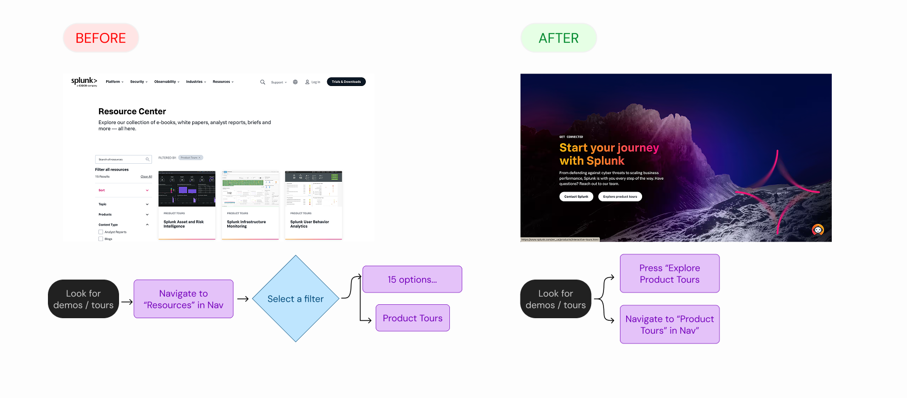

Cisco Splunk · UX Design Intern · Summer 2025
Three outcomes in twelve weeks: an audit six teams planned from, a Demo Center on splunk.com, and an AI concept from a hackathon.
I joined Splunk's Growth Marketing team right after Cisco's acquisition. Alongside a heuristic audit of 8+ domains, I kept gravitating toward one problem in two forms: helping people find what they need, first as a shipped Demo Center, then as an AI concept that turns a copied code snippet into the right next step.
Adopted
6
sprint teams moved audit findings into their planning
Concept validation
6 / 6
users validated the concept before I scoped it with SMEs and documented it for handoff
The audit
The mess I walked into.
Cisco had just acquired Splunk, and the seams showed everywhere: inconsistent navigation, redundant content across domains, dead ends with no recovery path, and users unsure which brand they were even on. Leadership knew it was fragmented; what the team needed was where the friction lived and which of it mattered most.
I audited 8+ domains against Nielsen heuristics, watched Mouseflow recordings of real sessions, and mapped competitors, then turned it all into a prioritized, sprint-ready set of recommendations instead of a findings deck.
The audit, explorable. I ran the heuristic evaluation, then built this interactive impact × effort matrix with Claude Code so stakeholders could explore it themselves during the roadshow. I defined the rubric and every placement; the model handled the build.
01Dead ends with no way back
Error and empty states stranded users: no recovery path, no next step. Flagged as high severity because every dead end was a potential lost evaluation.
02Redundant content across domains
The same product story told three different ways on three different domains. Users couldn't tell which page was canonical.
03Navigation that changed per surface
Cisco and Splunk surfaces used different wayfinding patterns, so learned behavior from one broke on the other.
04Brand confusion at decision moments
At the exact points where users were deciding to trust the product, the branding told two different stories.
What happened next
I took the findings on a roadshow across the org with team-specific views, and six sprint teams moved recommendations into their planning. The audit stopped being documentation and became a shared reference. The highest-leverage artifact I made all summer wasn't a screen.
Findability, v1 · Shipped
Demos needed a front door.
Separate from the audit, I kept coming back to one problem in two forms: helping people find what they need. Version one was the Demo Center. Splunk's demos were scattered across the site. Useful, but buried. I designed the Demo Center as the single front door: one IA, one component strategy, one copy hierarchy.

Before / after. From a five-step filter maze under Resources to a two-step front door.
Iterations
Filtering felt like the obvious answer: the old site was a filter maze, and users asked for filters. So I explored a bunch of placements to get them right.
Stakeholder review and 8 user tests narrowed it to one direction.
What testing taught me
01
Give people somewhere to start.
Users gravitated toward the featured demo as an easy starting point, so I kept featured content prominent instead of presenting every demo with equal weight.
02
Time matters before the click.
Users wanted to know a demo's duration before committing, so I surfaced time alongside each demo to make the choice easier.
03
Categories made a large catalog feel smaller.
Users responded well to browsing by Security, Observability, and other product areas, validating the pre-filtered categories as a faster path to relevant demos.
01
REMOVED
Duration
Users wanted
Time before committing
Users asked how long demos would take, but stakeholders confirmed they
were self-paced with no reliable duration. Rather than introduce a
misleading number, I removed time from the final design.
02
SIMPLIFIED
Filters
I explored
More ways to narrow
With a relatively small demo library, persistent filters added more
interface than value. Users already responded well to pre-categorized
paths like Security and Observability, so I removed the extra filtering
layer and let categories do the work.
03
ADVOCATED FOR
Featured demo
Business questioned
Giving one demo priority
Stakeholders initially didn't want a featured demo, but testing showed
that users valued having a clear place to start. I advocated for keeping
it prominent, using the research to support the decision.
The shipped Demo Center, live on splunk.com.
Fallback stillExport a frame from democenter.mp4: this still shows if the video can't load. Name it democenter-poster.png and swap this block for an <img>.
View the live Demo Center ↗
On credit: I led the design. [Engineering team built it from my specs; replace with what's true].
On metrics, honestly: post-launch success is tracked through demo engagement and downstream sign-ups, data that wasn't mine to publish. The shipped URL is the proof I can stand behind.
Reflection
What I'd do differently.
This internship taught me how to create momentum inside a large organization, including teaching a Figma Make workshop for the team on the AI-assisted workflow I'd been using all summer. Three things stuck with me:
01Clarity compounds.
The highest-leverage work I did wasn't a screen, it was making the system legible. A shared audit six teams could plan from. One front door for every demo. I'd look for that kind of leverage even earlier next time, instead of waiting to stumble into it.
02Evidence moves decisions.
Mouseflow recordings, usability tests, and competitor patterns gave me stronger footing than any opinion. When I could show a user struggling, the debate ended.
03Name the tool, own the judgment.
Claude Code built my audit matrix; Figma Make accelerated explorations. The tools gave me speed, but every rubric, placement, and final call was mine. I'd be even more explicit about that split going forward: show the AI's output, then show where I overrode it.